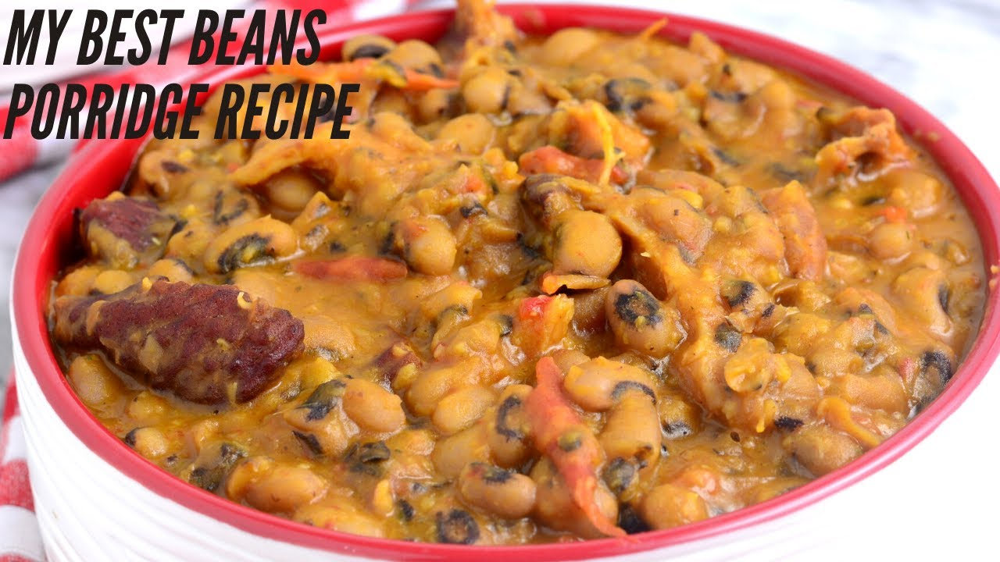
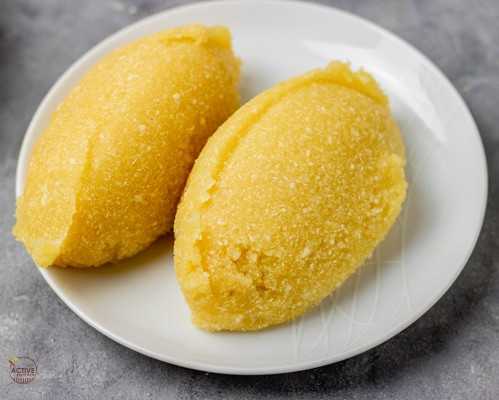

Nigeria Delicious Food Recipes
Egusi soup & Pounded Yam
Egusi is a popular Nigeria soup made from the seed of a particular
class of melon. it is best served with pouned yam or fufu.

Ingredients:
There are several ingredients used in making egusi, but for clarity
purpose the recipe herein will be grouped for easy comprehension.
- Ground melon seed, and protein
- Red oil and other relevant soup materials
- Dry stock fish or smoked fish
- Vegetables
- Maggi and locust beans
- Yam
How to make egusi and pounded yam
- Add a reasonable amount of red oil into your pot, fry your ground egusi and
add all other
ingredients
- Allow to boil for 20 minutes while stiring, then add your vegetables and keep on fire for extra 10
minutes and thereafter remove from cooker
- Boil your Yam and pound with a mortal and pistle, and prevent it from developing seed.
Red oil Beans or Porridge beans

Ingredients:
- White or Brown beans
- Assorted
- Onion
- Red Oil and salt
Procedure:
- Place your pot in cooker, add water and alllow to boil
- Add your red oil
- Add your onion
- Add your salt
- Pour in your assorted
- Wait for 10 mins and remove from the cooker, serve when mild hot,
with Nigeria Groceries without floating berries
Eba or Garri

Ingredients:
- Quantity of Garri
- Hot water
- A deep bowl
- Turning stick or spatular
How to make eba:
- Boil your water and pour it in a bowl
- Pour in your garri into the hot water till it gets hard
- Turn the formed eba rigorously and allow blend smoothly
- Serve with any sweet soup
You can reach me on my email oyewole.dekeri8252@nctorontostudents.ca
for more Nigeria secret food recipe.
God bless Nigeria